Human First — มนุษย์มาก่อน
เริ่มต้นทุกงาน ทุกบรีฟ ทุกไอเดีย ด้วยมนุษย์เป็นคนตั้งโจทย์และกำหนด Direction
รวมทุก Insight จากงาน AI Sharing — ตั้งแต่วิธีใช้ AI ในชีวิตส่วนตัว ไปจนถึง Workflow ด้านการตลาดระดับโปร
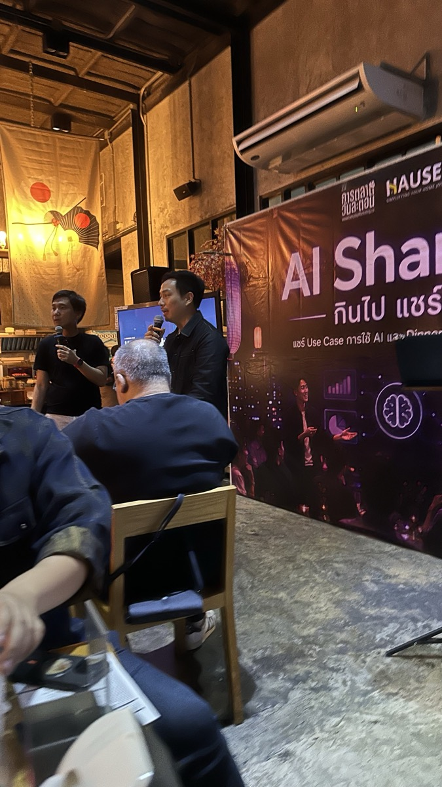
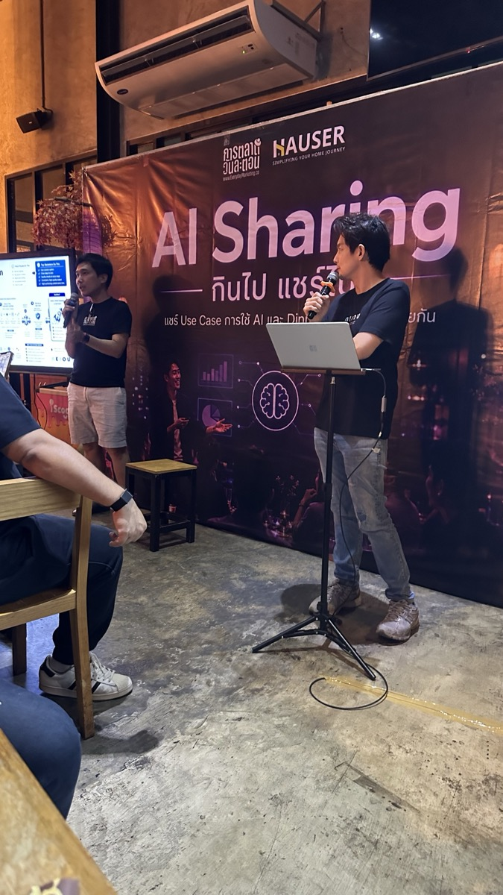
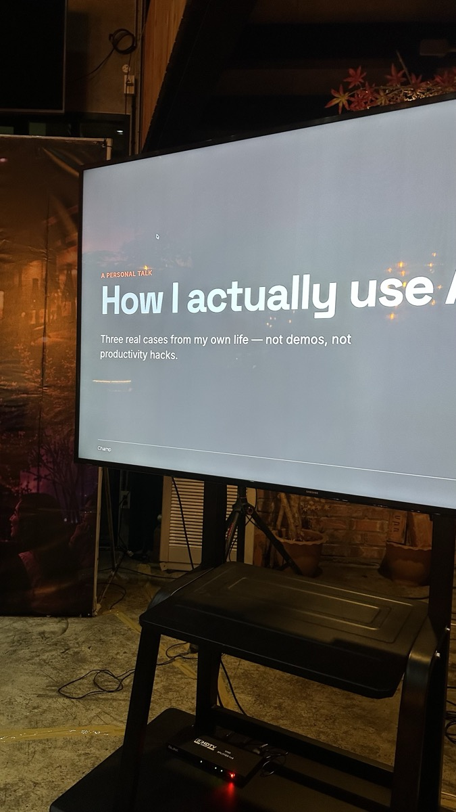
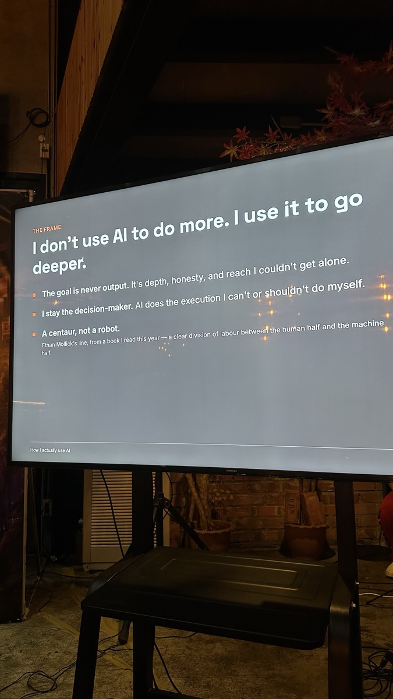
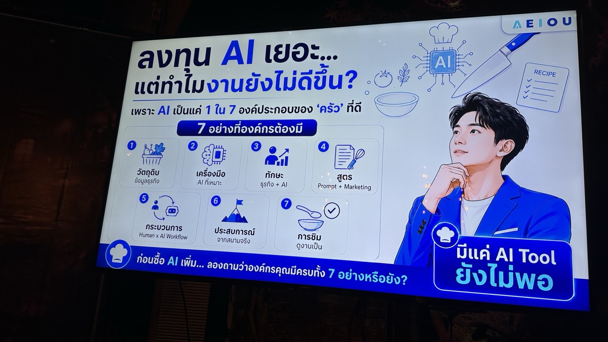
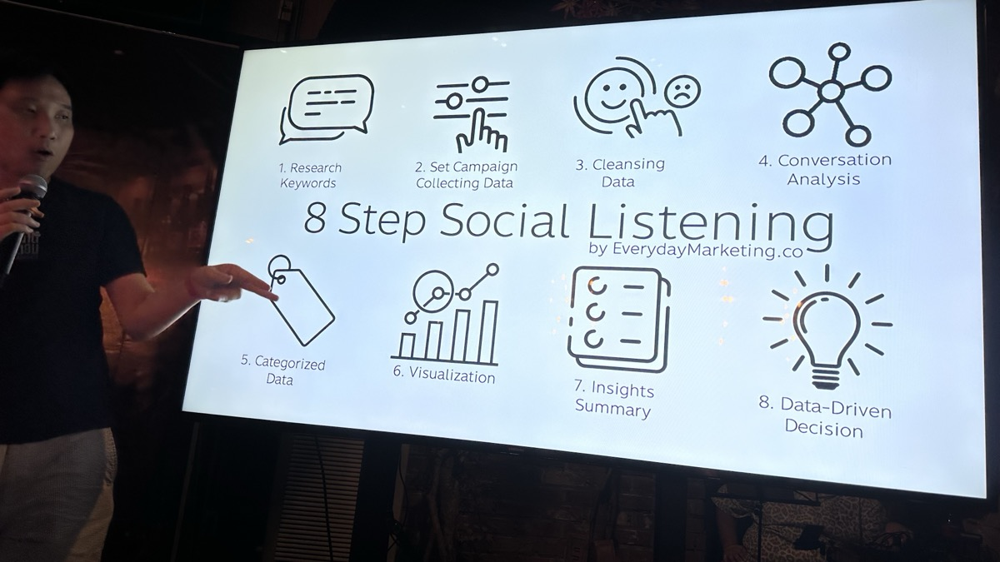
มนุษย์ยังเป็น decision-maker เสมอ — AI ทำ execution ในส่วนที่ทำเองไม่ได้หรือทำได้ไม่ดีพอ ไม่ใช่ Demo ไม่ใช่ Productivity Hack แต่เป็น Use Case จริงในชีวิต
สไลด์เปิด: How I actually use AI
THE FRAME: ปรัชญาหลักของ Champ
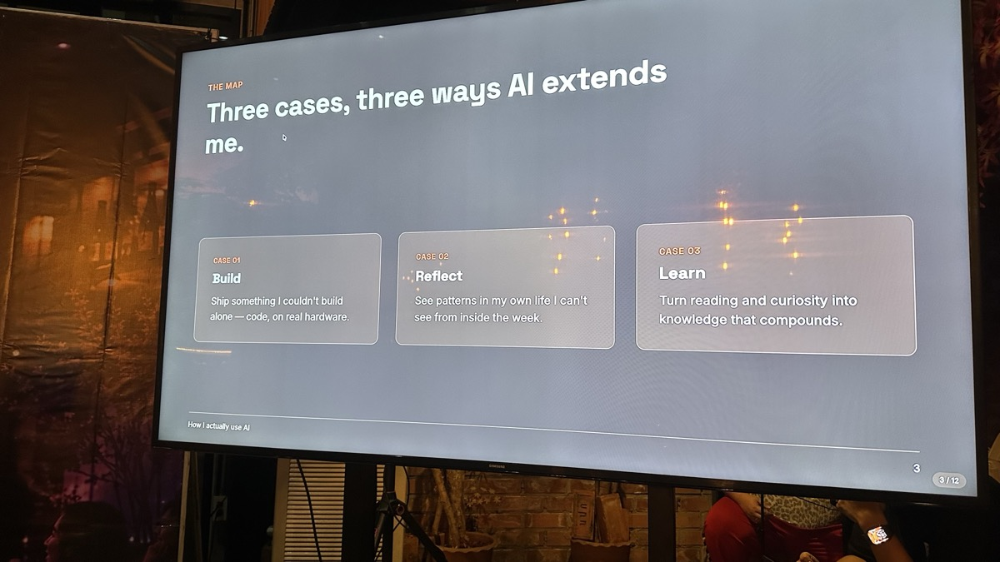
3 Cases ที่ AI ช่วยขยายตัวตนของ Champ
เขียนโค้ด patch firmware เครื่องเก่าผ่าน Claude ให้อุปกรณ์ e-ink จริงแสดงผลภาษาไทยได้ถูกต้อง — งานที่ทำคนเดียวยากมาก
ป้อน Daily Journal รวมถึงภาพถ่ายโน้ตบุ๊ก ให้ AI ช่วยอ่านและวิเคราะห์ เช่น เตือนว่าไม่ได้เจอเพื่อนนานหลายเดือนแล้ว ควรนัดเจอกันได้แล้ว
เปลี่ยนการอ่านและความอยากรู้ให้ง่ายขึ้น ใช้ AI ช่วยให้ชีวิตการเรียนรู้สะดวกและได้ประโยชน์มากขึ้น
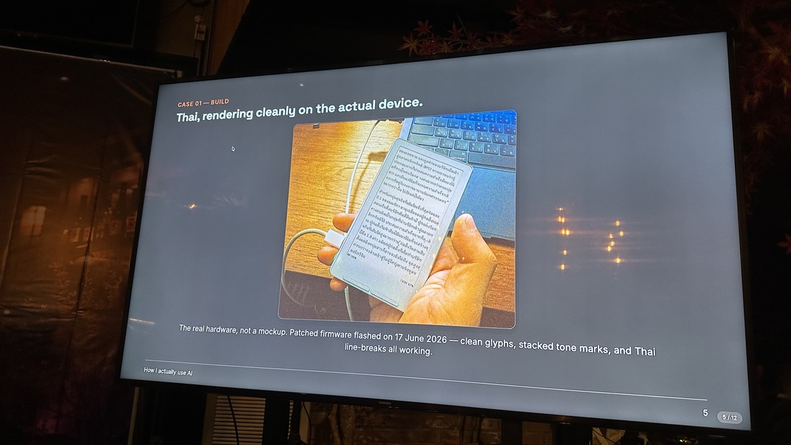
Case 01: ภาษาไทยบน e-Reader จริง (Firmware 17 มิ.ย. 2026)
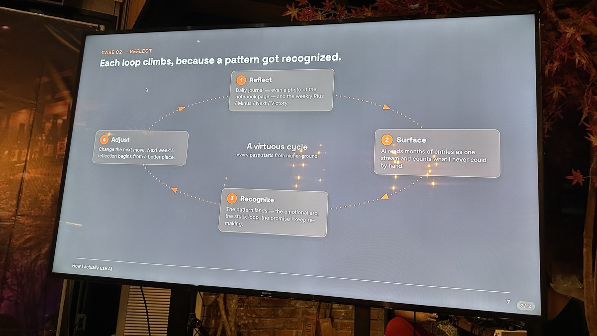
Case 02: วงจร Reflect ที่ขึ้นสูงทุกรอบ
เขียน Journal รายวัน + สรุปรายสัปดาห์ Plus/Minus/Next/Victory
AI อ่าน Journal หลายเดือนพร้อมกัน นับสิ่งที่เราทำคนเดียวไม่ได้
เจอ Pattern — อารมณ์ที่วนซ้ำ สัญญาที่ทำซ้ำ วงที่ติดอยู่
ปรับ Move ถัดไป — สัปดาห์หน้าเริ่มจากจุดที่สูงกว่าเดิม
เพราะ AI เป็นแค่ 1 ใน 7 องค์ประกอบของ "ครัว" ที่ดี — มีแค่ AI Tool ยังไม่พอ
7 องค์ประกอบที่องค์กรต้องมีก่อนลงทุน AI เพิ่ม
ข้อมูลธุรกิจที่ถูกต้องและครบถ้วน
AI ที่เหมาะสมกับงานนั้น ๆ
ทักษะธุรกิจ + ทักษะใช้ AI ควบคู่กัน
Prompt + Marketing Framework ที่ดี
Human × AI Workflow ที่ชัดเจน
ประสบการณ์จากสนามจริง
ดูงานเป็น — รู้ว่าผลลัพธ์ดีหรือไม่ดี
ระบบการตลาดครบวงจรแบบ Step-by-Step — 8 หมวดหลักที่ต้องรู้
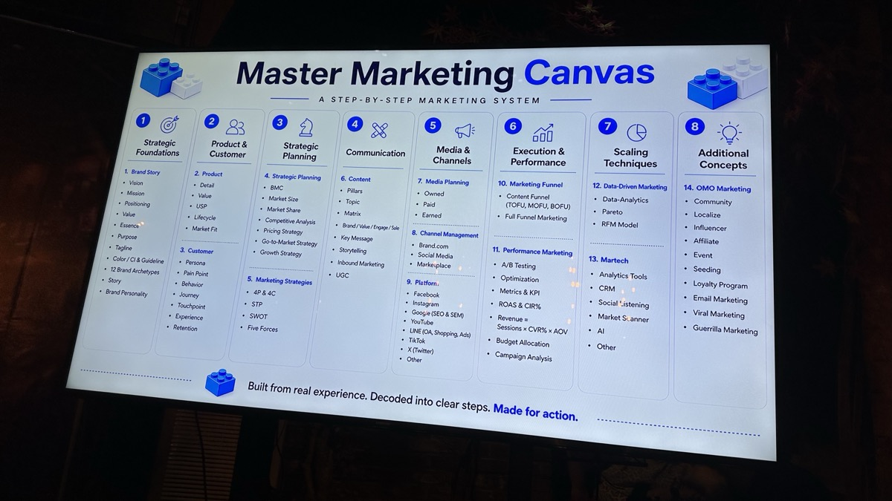
Master Marketing Canvas — Built from real experience, made for action
CMO คนเดียว + Marketing Orchestrator Plugin → ควบคุม AI Agent 6 บทบาท ผลิตงานได้ครบ
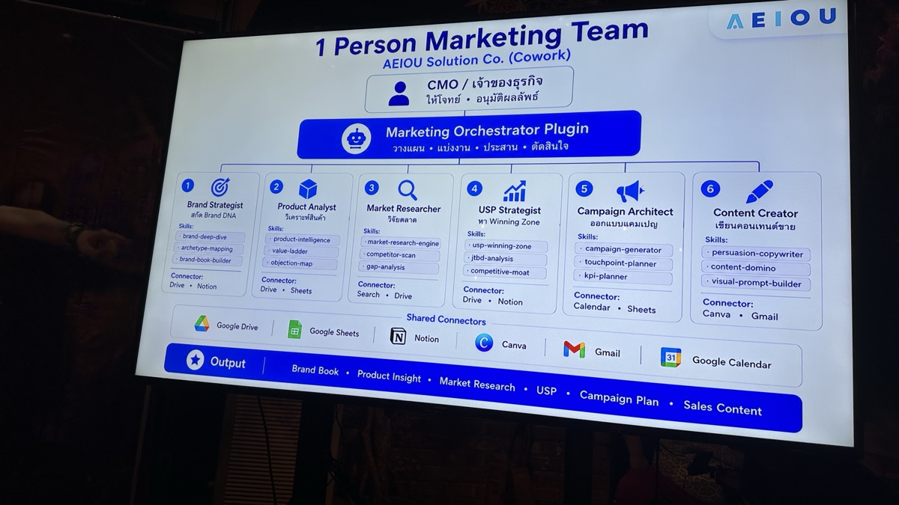
โครงสร้าง 1 Person Marketing Team — เชื่อมกับ Google Drive, Sheets, Notion, Canva, Gmail, Calendar
สร้าง Brand DNA — deep-dive, archetype-mapping, brand-book-builder
วิเคราะห์สินค้า — product-intelligence, value-ladder, objection-map
วิจัยตลาด — research-engine, competitor-scan, gap-analysis
หา Winning Zone — usp-winning-zone, jtbd-analysis, competitive-moat
ออกแบบแคมเปญ — campaign-generator, touchpoint-planner, kpi-planner
เขียนคอนเทนต์ขาย — persuasion-copywriter, content-domino, visual-prompt-builder
5 ขั้นตอนในการสร้างคอนเทนต์ด้วย AI ตั้งแต่ต้นจนจบ
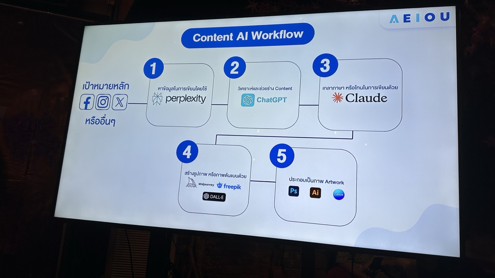
Content AI Workflow — เป้าหมาย: Facebook, Instagram, X และช่องอื่น ๆ
เป้าหมาย: ผลิตวิดีโอสไตล์ Edutainment มี Hook หยุดนิ้วได้ใน 3 วินาทีแรก
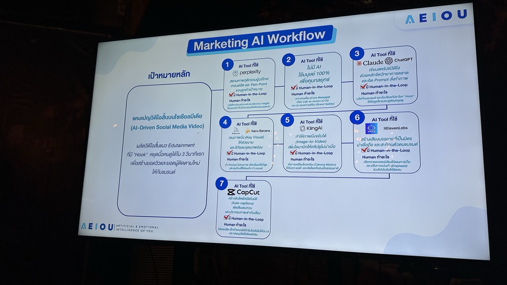
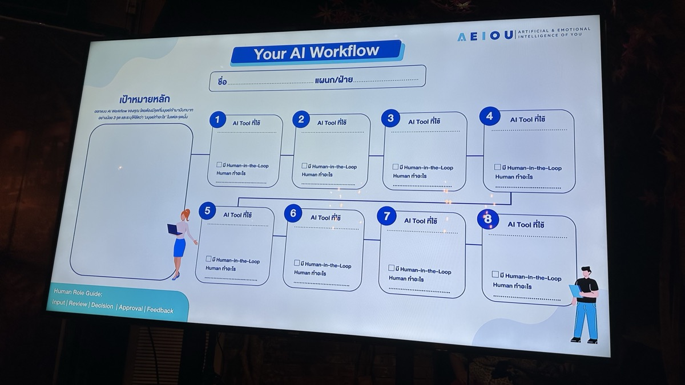
Marketing AI Workflow (ซ้าย) และ Template สำหรับทุกทีม (ขวา)
ค้นข้อมูลกรอบธุรกิจ/ตลาด หา Pain Point ของลูกค้า
คนเลือก Core Message และ Call-to-Action ที่ใช่ — ไม่ให้ AI ตัดสิน
เขียนด้วยหลักจิตวิทยาการตลาด พร้อม Prompt สั่งทำที่แม่น
สร้างภาพนิ่งที่ดึงดูด เป็น Prompt Source ให้ขั้นถัดไป
Image-to-Video พร้อม Camera Motion
เสียงระดับมืออาชีพ เน้นคำสำคัญได้
Auto-caption ตัดต่อ เพิ่มเสียงดนตรี ประกอบเป็นผลงาน
ระบบที่เปลี่ยน 3 วัน → 3 นาที ด้วย Domino Prompt System
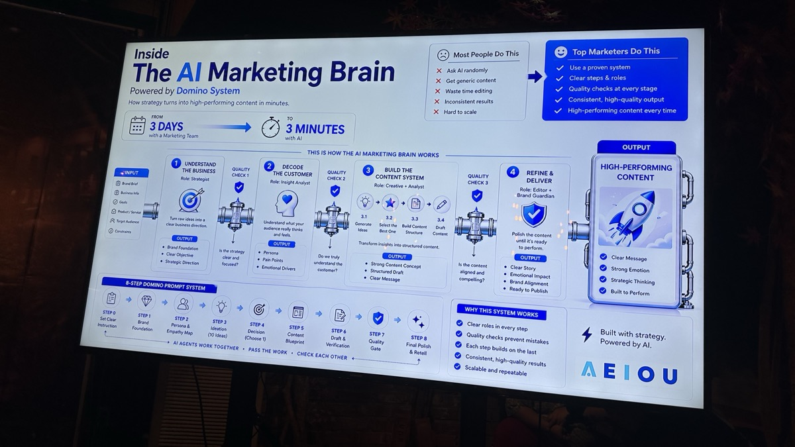
The AI Marketing Brain — Powered by Domino System — 8-Step Prompt ที่ AI Agents ส่งต่องานกัน
Role: Strategist — เปลี่ยนข้อมูลดิบเป็นทิศทางที่ชัด
Role: Insight Analyst — เข้าใจลูกค้าถึงอารมณ์และความรู้สึก
Role: Creative + Analyst — สร้างโครงสร้างคอนเทนต์ที่แม่น
Role: Editor + Brand Guardian — ขัดเงาให้พร้อม Publish
6 หลักการใช้ AI ให้ถูกทาง — มนุษย์ต้องอยู่ในสมการเสมอ
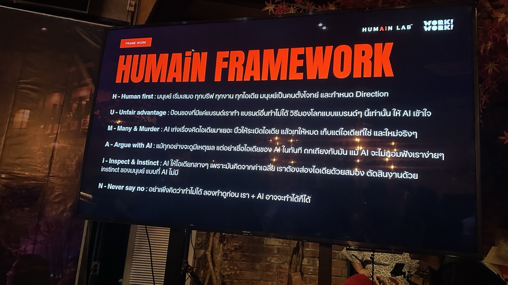
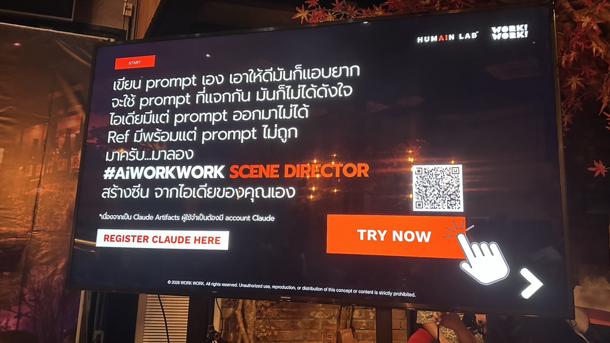
HUMAiN Framework (ซ้าย) และ Scene Director Tool (ขวา)
เริ่มต้นทุกงาน ทุกบรีฟ ทุกไอเดีย ด้วยมนุษย์เป็นคนตั้งโจทย์และกำหนด Direction
แบรนด์อื่นทำได้ แต่ AI จะมองโลกแบบแบรนด์เราเท่านั้น ถ้าเราให้ AI เข้าใจจุดแตกต่างของเรา
AI เก่งเรื่องคิดไอเดียมาเยอะ — ให้เปิดไอเดีย แล้วเราเป็นคนเก็บไอเดียที่ใช้ได้จริง ๆ
แม้ทุกอย่างจะดูมีเหตุผล แต่อย่าเชื่อไอเดียของ AI ในทันที — ถกเถียงกับมัน แม้ AI จะอ่อนฟังเราง่าย ๆ
AI ให้ไอเดียกลาง ๆ เพราะคิดจากค่าเฉลี่ย — ต้องส่องไอเดียด้วยสายตา ตัดสินงานด้วยประสบการณ์ที่ AI ไม่มี
ลองทำก่อน — เรา + AI อาจจะทำได้ก็ได้! จงเปิดใจกับความเป็นไปได้ใหม่ ๆ
เทคนิคสร้าง Claude Skills ให้ AI ทำงานกับ Software จริง ๆ ได้อัตโนมัติ
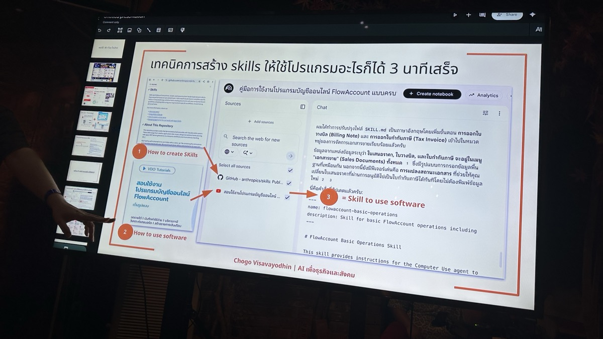
เทคนิคสร้าง Skill จาก Chogo Visavayodhin — ใช้ Claude + คู่มือซอฟต์แวร์ = ทำงานแทนได้ทันที
ดู VDO Tutorial วิธีสร้าง Skills ให้ Claude — ทำตามได้ทันที
หาคู่มือของโปรแกรมที่ต้องการ เช่น FlowAccount — เอาเป็น Source ให้ AI อ่าน
Claude อ่านคู่มือ → สร้าง skill.md → ใช้ Computer Use Agent ทำงานกับโปรแกรมได้จริง
8 ขั้นตอน Social Listening
กระบวนการฟังเสียงลูกค้าบนโซเชียล อย่างเป็นระบบ — จากข้อมูลสู่การตัดสินใจ
8 Step Social Listening by EverydayMarketing.co